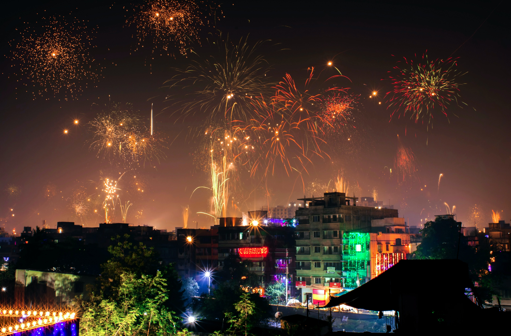

Diwali - The Festival of Lights
|
Diwali, also known as Deepavali, is one of
the most significant and widely celebrated
festivals in India and among Indian
communities around the world.It is a festival
of lights that signifies the victory of light over
darkness and good over evil. Here
are some key details about Diwali.
|

|
-
The word Deepavali is derived from Sanskrit. Deepawali comprises two words Deep and Aavali, which means decorating with lamps. Deepawali is also called the festival of lights and Deepotsav.
-
This auspicious festival of Diwali celebrates the new moon day of Kartik month. This festival has been celebrating in the welcome of the winter season by leaving the rainy season.
-
India is considered a country of festivals. The major festivals of India are Holi, Rakshabandhan,
Dussehra, and Deepawali, but among all these festivals, Deepawali is the most prominent festival.
-
This is the festival of lamps. When we remove the darkness of ignorance and light the essence of
knowledge, we experience an infinite and supernatural joy. Diwali is also a symbol of light in the
form of knowledge.
-
Lamps lit on this day, so it is also called the festival of lamps. Deepawali is also called Diwali
in Tadbhava language. People celebrate Diwali with great enthusiasm.
-
The festival of Diwali celebrates for five days. Since the festival of Dussehra, preparations start
for Diwali. Those who do jobs are also given a few days off to celebrate the festival so they can
celebrate Diwali happily with their family.
-
Diwali celebrates in October or November. On the day of this occasion, people burn rows of lamps and
light up to express their happiness at night. Towns and villages illuminate with rows of lights. It seems
as the night has changed into a day.